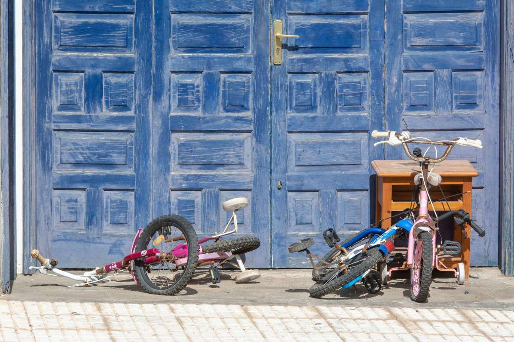

Old sports gear is one of the easiest garage loads to clear once it is sorted. Pull batteries out of e-bikes and scooters, drain or empty the base of a portable basketball hoop, set camp propane aside for your city's chemical program, and let the kids pick what stays. A crew carries the rest out together.
Sports gear piles up one season at a time. The bikes the kids rode at eight are still hanging next to the ones they rode at twelve. The kayak went up on the wall after two good summers on the lake and has not come down since. There is a portable hoop at the end of the driveway with a cracked base, a pitchback net folded behind the lawn mower, a golf bag nobody has carried in years, and a bin of balls in every size.
Why sports gear takes over the garage
Most of it is long, awkward or both. A kayak or paddleboard does not fit in a bin, and a bike with a flat tire is too good to throw out and too much trouble to fix. So it gets hung on a hook or leaned on a wall, and the wall fills up.
Some of it is also tied to who the family was a few years ago. Soccer goals from when the kids played on Saturdays, the tennis rackets from the lessons, the camping gear from the trips. Letting it go is easier when the people who used it get a say first. Give each kid a weekend and a bin, and anything not claimed by then is fair game.
E-bikes, scooters and anything with a battery
This is the one category that needs prep before a pickup.
Take the battery out. E-bikes, electric scooters, hoverboards and kids' ride-on toys run on lithium-ion packs. The EPA's guide to used lithium-ion batteries explains that these batteries can cause fires when damaged and should never go in household trash or curbside recycling. They go to a battery drop-off or your city's collection program instead. Once the pack is out, the frame can go on our truck like any other bike.
Check the small stuff too. Bike lights, GPS units, heated gloves and electronic scoreboards often still have batteries inside. Pull them before the gear goes in the pile.
Camp propane stays off the truck. The little green cylinders from a camp stove, a lantern or a portable heater go to household chemical collection, along with fuel cans and old bug spray. Plano's household chemical collection program is one example, and the TCEQ keeps a guide to household hazardous waste collection across Texas. We will point you to your city's.
Empty the base of a portable hoop before pickup. Most portable basketball hoops sit on a plastic base filled with water or sand. Drain or empty it a day or two ahead so the base can be lifted and carried. A hoop with its pole set in concrete in the ground is a different job, so tell us about it up front and the crew will look at it before quoting.
What can be donated and what cannot
Bikes in good working order and kids' sporting goods in decent shape all have a chance with local donation programs, though each one keeps its own list. Gear that is cracked, rusted through, missing parts or soaked from years against the back wall usually does not.
A good test is the same one we use for furniture in our guide to donating furniture in DFW: if you would not hand it to a neighbor's kid, a donation center probably cannot use it either.
If some of it is just too big for the curb, check what your city will collect first. Frisco's bulk trash pickup and similar programs take some large items on a schedule, and our post on bulky trash the city skipped covers what happens when they do not.
What we haul from a sports gear cleanout
On a typical pickup like this, we take:
- bikes of every size, including e-bike frames once the battery is out
- kayaks, canoes, paddleboards and the wall racks that held them
- portable basketball hoops, once the base is drained or emptied
- soccer goals, pitchback nets, batting cages and practice rebounders
- golf bags, clubs and pull carts, tennis rackets and ball machines
- tents, sleeping bags, folding chairs, coolers and empty camp stoves
- skis, snowboards, skateboards and the bin of balls and pads
Bigger backyard pieces come out on the same visit. Our post on hot tubs, sheds and playsets covers trampolines and swing sets, and if the backyard also has an old spa, here is how we take out a hot tub that nobody uses anymore. For the weight bench and the treadmill in the corner, see our guide to clearing out a home gym.
Sports gear rarely leaves alone. It usually goes with the rest of the garage, and our garage cleanout checklist walks through the whole room. If you are not sure something will go on the truck, our list of what junk removal will and will not take answers most of it.
We handle these pickups across the northern suburbs, whether it is a garage full of outgrown bikes in Prosper or a side yard cleared of old nets and broken goals in Wylie.
Where it goes after we load it: usable items go to local donation partners, metal goes to recyclers, and our stated goal is to keep more than half of every load out of the landfill.
How the pickup runs
Send us a photo of what is going and where it is: the garage wall, the side yard, the end of the driveway. Tell us if a kayak is up in the rafters or a hoop is set in the ground, so the crew plans for it.
A crew looks at what you have and gives you a firm number before anything is loaded. The quote is the bill, and disposal is included. We are affordable and priced fair, based on how much there is to take. You point, we carry, we sweep. These are our own crews, not gig labor.
Call before noon and same afternoon is typical across the northern suburbs. When the gear is sorted, tell us what needs to go, or read more about how our garage cleanouts work for the whole room.
Frequently asked questions
Do you take old bikes?
Yes, any size and any condition. Usable bikes go to local donation partners when they can, and the rest goes to metal recycling.
Will you take an e-bike or electric scooter?
Yes, once the battery is out. Lithium-ion packs go to a battery drop-off or your city's collection program, not on our truck.
Can you haul a portable basketball hoop?
Yes. Drain or empty the base first. If the pole is set in concrete in the ground, tell us up front so the crew can look at it before quoting.
Do you take kayaks and paddleboards?
Yes, along with the wall racks and the paddles. Let us know if they are stored up high so the crew comes ready to bring them down.
What about camp propane and fuel?
Those go to your city's household chemical collection program, not on our truck. We will point you to the right one.
Keep the gear that still gets used, and let the rest leave in one trip.